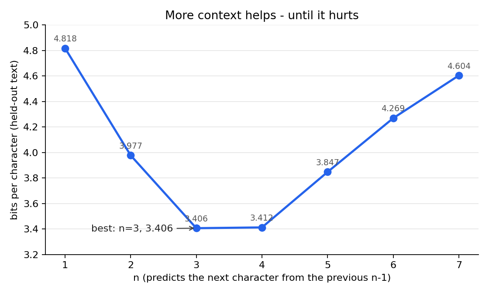

Does more context always help? A 31-line experiment
A small experiment with character n-gram models: predict the next character from the previous n-1 characters, with add-one smoothing. Train on 80% of a text, measure bits per character on the held-out 20%. Lower is better. The whole thing is 31 lines of Python, standard library only, and the run is deterministic.
The code is on GitHub: https://github.com/ido-lempert/ngram-context-lab - one file plus the corpus and the saved results.
The result is a curve that dips. With no preceding characters of context (n=1), the model needs 4.818 bits per character. The best is n=3 at 3.406. By n=7 it is at 4.604, worse than n=2. More context helps, then it hurts.

Why it turns: longer contexts are rarely seen in the training text, and add-one smoothing hands too much probability to combinations that never appear. Past a point, each extra character of context adds sparsity faster than it adds signal.
What this does not show: one corpus (about 320,000 characters of Python standard-library documentation), one 80/20 split, no repeats, so the turning point may move with other text. Add-one smoothing is crude; better smoothing, for example interpolation, would very likely move the curve. I did not try it. This is a toy, not a claim about large language models.